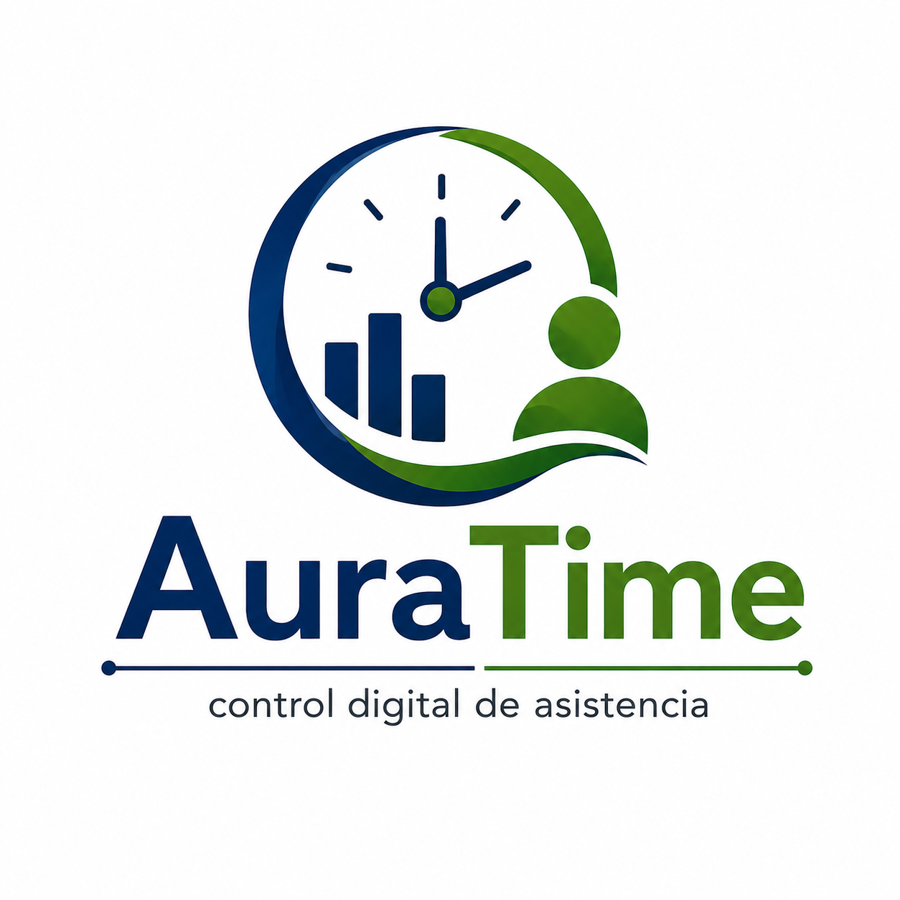

01 · DASHBOARD
Todo bajo control.
Visualiza indicadores de asistencia desde un panel central.
AURATIME Panel principal
1.248Estudiantes86Docentes94,6%Asistencia

INNOVACIÓN TECNOLÓGICA EDUCATIVAUna solución digital para modernizar el control de asistencia de estudiantes, docentes y personal.
Viacha · La Paz · BoliviaAuraTime centraliza el registro, control y seguimiento de estudiantes, docentes y personal en una propuesta digital pensada para el contexto educativo de Viacha.
Una propuesta tecnológica para transformar la manera en que las instituciones educativas gestionan su asistencia.
AuraTime es un sistema digital de control de asistencia diseñado para instituciones educativas. Centraliza la información de estudiantes, docentes y personal para facilitar el registro, consulta y seguimiento.
La propuesta busca reducir la dependencia de registros manuales y convertir los datos de asistencia en información organizada y útil.
Vista conceptual de los principales módulos de la solución.
Una innovación pensada desde Viacha para contribuir a la transformación digital educativa.
Una propuesta digital orientada a modernizar procesos de asistencia.
Una herramienta pensada para ser comprensible y útil.
Información organizada para un seguimiento más claro.
Impulsa herramientas digitales en la gestión institucional.
Desarrollar una solución digital accesible, confiable y eficiente que facilite el registro, seguimiento y consulta de la asistencia de estudiantes, docentes y personal.
Convertir a AuraTime en una solución tecnológica de referencia para la gestión digital de asistencia en instituciones educativas de Viacha y proyectar su expansión hacia otros municipios y departamentos de Bolivia.
Una plataforma pensada para centralizar las necesidades de control de asistencia.
Registro, consulta y administración de estudiantes.
Gestión de información y asistencia docente.
Administración del personal de apoyo.
Entradas, salidas, tardanzas e inasistencias.
Información estadística para gestión institucional.
Indicadores y resumen de asistencia.
Registro y seguimiento de faltas justificadas.
Identificación de situaciones que requieren atención.
La propuesta puede evolucionar incorporando diferentes tecnologías para adaptar el registro y análisis a las necesidades de cada institución.
Registro rápido mediante códigos.
REGISTRO DIGITALTarjetas o dispositivos compatibles.
IDENTIFICACIÓNVerificación de ubicación como mecanismo complementario.
CONTROL CONTEXTUALProyección para análisis de patrones.
PROYECCIÓN FUTURAReduce tareas repetitivas de registro y consulta.
Centraliza la información en una plataforma.
Facilita consultar datos de asistencia.
Apoya la transformación digital institucional.
Permite identificar tardanzas e inasistencias.
Convierte registros en información útil.
El enfoque inicial de AuraTime está dirigido a instituciones educativas de Viacha, con visión de crecimiento hacia otros espacios educativos.
Una propuesta clara para comenzar a digitalizar la gestión de asistencia.
Implementación del sistema para una institución educativa.
Solicitar AuraTime →* Bs 2.000 corresponde a la implementación propuesta. Dominio, hosting, hardware o desarrollos adicionales pueden requerir una cotización independiente.
Déjanos tus datos y podremos conversar sobre la implementación y las necesidades de tu institución.